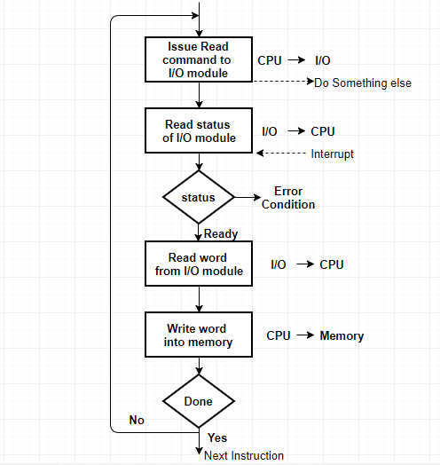

Interrupt driven I/O is an alternative scheme dealing with I/O.
The problem with programmed I/O is that the processor has to wait a
long time for the I/O module of concern to be ready for either reception or transmission of data.
In programmed I/O, CPU has to repeatedly check whether a device is free or not.
The solution to this problem is to provide an interrupt mechanism.
In this approach the CPU switches to some other program without waiting for the i/o device to complete or become free.
When the device becomes free, it informs back to CPU through an Interrupt.
Basic Operations of Interrupt
CPU issues read command.
I/O module gets data from peripheral whilst CPU does other work.
I/O module interrupts CPU.
CPU requests data.
I/O module transfers data.

Interrupt Processing
Advantage - fast -efficient
Disadvantage - can be tricky to write if using a low level language.
- can be tough to get various pieces to work well together.